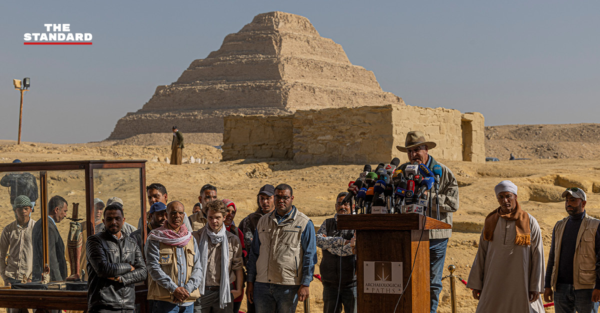

- fggrsgegf


นักโบราณคดีค้นพบมัมมี่อายุ 4,300 ปี เก่าแก่สุดและมีสภาพสมบูรณ์สุดเท่าที่เคยพบมาในอียิปต์

นักโบราณคดีชาวอียิปต์ได้ค้นพบมัมมี่ที่ ‘เก่าแก่ที่สุดและมีสภาพสมบูรณ์ที่สุด’ เท่าที่เคยขุดค้นเจอมาในประเทศนี้ ในสุสานแห่งหนึ่งซึ่งอยู่ใกล้กับกรุงไคโร เมืองหลวงของประเทศ
ร่างของมัมมี่อายุ 4,300 ปีถูกค้นพบที่ด้านล่างของปล่องอุโมงค์ที่มีความลึก 15 เมตรในกลุ่มสุสานที่นักโบราณคดีเพิ่งค้นพบในเมืองซัคคารา ซึ่งมีอายุย้อนไปถึงในยุคอาณาจักรเก่า (Old Kingdom) สมัยราชวงศ์ที่ 5-6 โดยอยู่ใกล้กับพีระมิดขั้นบันไดที่มีชื่อเสียงของเมืองแห่งนี้ รายงานระบุว่า มัมมี่นี้เป็นร่างของชายที่มีชื่อว่า Hekashepes ซึ่งมีทองคำเปลวปิดไว้ บ่งบอกว่าชายผู้นี้ในอดีตเป็นคนที่มีฐานะ ร่างของมัมมี่ถูกบรรจุไว้ในโลงหินปูนน้ำหนักมากถึง 25 ตันที่มีการโบกปูนซ้อนทับอีกชั้นหนึ่ง ซาฮี ฮาวาสส์ (Zahi Hawass) หัวหน้าทีมนักโบราณคดี เปิดเผยว่า “ผมชะโงกหน้าลงไปเพื่อดูว่าสิ่งใดอยู่ในโลงหินปูนนี้ และผมก็พบว่ามีมัมมี่สภาพดีที่ถูกหุ้มด้วยทองคำเปลว ซึ่งมัมมี่ร่างนี้อาจเป็นมัมมี่ที่เก่าแก่สุดและมีสภาพสมบูรณ์สุดเท่าที่เคยค้นพบมาในอียิปต์” นอกจากนี้ยังมีการค้นพบหลุมศพของมัมมี่อื่นๆ ด้วย โดยหนึ่งนั้นเป็นหลุมศพของชายที่มีชื่อว่า Khnumdjedef ซึ่งเป็นผู้ตรวจราชการ ผู้บังคับบัญชาของขุนนาง และนักบวชในรัชสมัยของอูนาส (Unas) ฟาโรห์พระองค์สุดท้ายของราชวงศ์ที่ 5 โดยในหลุมศพมีการประดับประดาด้วยภาพเขียนฉากชีวิตประจำวัน ส่วนอีกหลุมหนึ่งเป็นของมัมมี่ที่ชื่อ Meri ซึ่งได้รับการขนานนามว่าเป็น ‘ผู้รักษาความลับ’ ของพระราชวัง รวมถึงยังเป็นผู้นำในการประกอบพิธีทางศาสนา และหลุมที่ 3 เป็นของนักบวชในพีระมิดของฟาโรห์เปปิที่ 1 และหลุมที่ 4 เป็นของผู้พิพากษาและนักเขียนที่ชื่อว่า Fetek ซึ่งในหลุมนี้มีการค้นพบรูปปั้นที่มีขนาดใหญ่ที่สุดเท่าที่เคยพบมาในพื้นที่แห่งนี้ อนึ่ง เมืองซัคคาราซึ่งอยู่ห่างจากกรุงไคโรไปทางใต้ประมาณ 32 กิโลเมตร เป็นสถานที่ที่เปิดการค้นพบอันน่าอัศจรรย์มากมาย โดยในอดีตเมืองแห่งนี้เคยถูกใช้เป็นสถานที่ในการฝังศพมัมมี่มานานกว่า 3,000 ปี อีกทั้งยังถูกกำหนดให้เป็นมรดกโลกของยูเนสโก